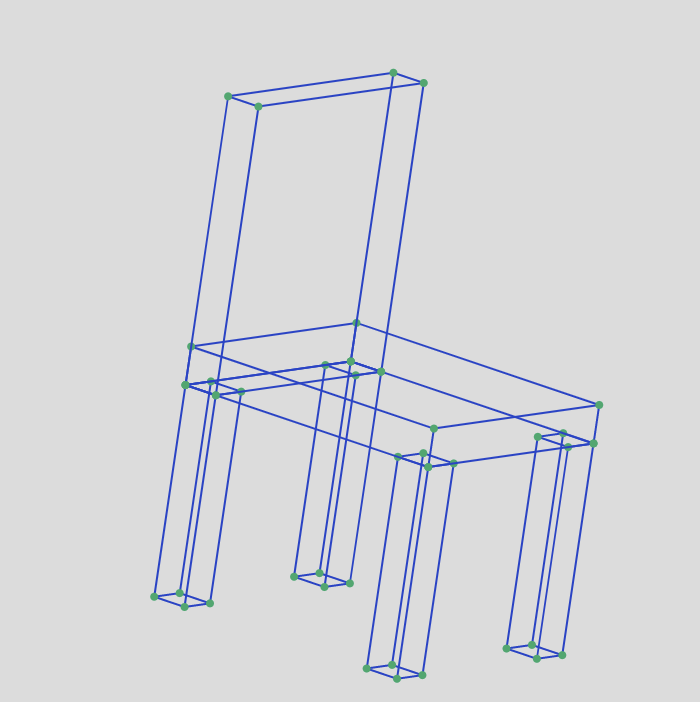
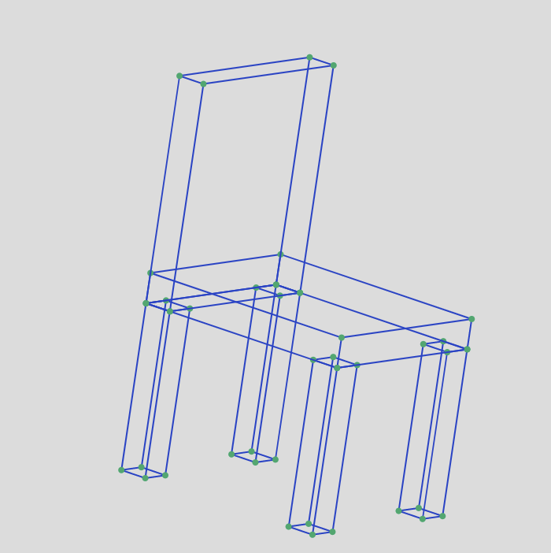

My Basic Animation: My plan for this project was to make a maze game, as I thought it would be a doable, yet interesting game to create in BASIC. I utilized progams for snake games to figure out the code to make the player move based on arrow key inputs, and then added the extra layer of what happend when you hit a "wall".
3D Object in P5: Creating a chair was inspired by Sarah's desire to make a table, so I thought we would make a set! This was relatively straightforward. As you can see, I just used different dimensions of cubes, or rectangular prisms, put together.
My Interactive Graphics Logo: For this project, I wanted to do something that would capture the aesthetics of a graphics class, which is why I tried to create the font that I used for the word "graphics". I also thought it kind of emulates the visuals of a light up neon sign, which I thought was cool.